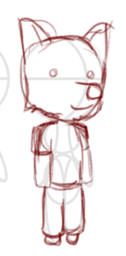
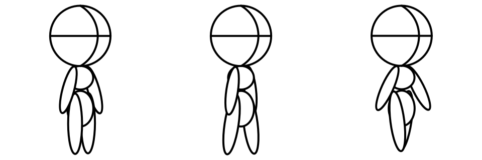

I've unfortunately had a rough time over the past couple of days, with severe toothache keeping me up the entirety of Tuesday night and a general low mood throughout the week. I'm clearing out my living space a bit when I can and have rearranged my living room to give me more space. Looking forward to having friends over as soon as I can.
As for the jam, I've made some progress the past couple of days. I've got a character moving on a tiled background that's randomly generated each time. Next step will be to work out routing so characters will avoid walls and such and to make sure depth works.

A quick character doodle I did the other night. With time ticking by I don't know how many characters I'm going to be able to make before the end of the jam but this gives an idea of the style I'll be going for. I have reduced hours on a Friday so hopefully I'll get a chance to do some more. The way this will work I'll likely need separate sprites for the characters arms and head but I'll deal with that when I get to it.
My sleeping pills are kicking in now so I'd better get some sleep. Goodnight!
First bit of coding. Glad I've got something up. I stole the idea from an interactive portfolio I saw that made a platformer game using html, css and js. The animations were done by using s div with a background image and changing the offset. I essentially have a spritesheet and cycle between each one to make the animation. It turned out a lot better than I thought it might. It actually looks like a thing walking around.

There's only a little logic in there. They walk to a new location every couple of seconds. They have a set speed by setting the css transition time to be proportional to the distance moved. A css transform is used to turn them left if they are moving to the left although in future this will probably be a new row in the spritesheet as characters may not always be symmetrical. A tiny thing I'd like to do is set them up so they can start walking on either their left or right leg just as a little bit of variety. I'm also going to have to remember perspective when calculating the characters speed.
I'm moving my PC to the other side of the room tomorrow. With that and my full time job I'm not sure how much time I'm going to be able to dedicate to the project. At the very least I'll be able to do some sketches while waiting for builds and tests to run at my job. For the next step I'd like to get an initial scene sorted then perhaps work on some art.
Day 1
22 / 06 / 2020
It has begun! Day one has not been as productive as I would have liked. In fact I mostly forgot about the jam and only signed up this evening, getting my ticket and joining the jam's discord. Distractions mainly due to a friend in need needing a bit of company so can't be disappointed in myself for that.
The project is an idea I've had for a while, less a game and more a relaxing experience with heavy inspiration from Animal Crossing. There's going to be a lot of focus on the art assets as I still need to properly learn Godot for game development so this will be an HTML based project. As it needs to be downloadable I'll use Electron to package it as a standalone app. A couple of people doing the jam have offered to create music for the project which will be a huge help in creating the atmosphere I want.
As it stands I'd like to keep the full idea and scope under wraps and concentrate on sharing what I've actually worked on.
Today has been mainly the admin of signing up and sketching things down with paper and pencil. I started on vector work to get a base character model and an idea of thr perspective I want. Originally the view was going to be from street level but raising that up allows more to be visible and ultimately for more to be packed into the available space. This is important as it's only planned to be on a single screen at the moment.
Tomorrow I'll try to get a basic demo with a little bit of animation up and running. Once I see stuff moving I think the motivation will pick up.